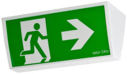

Emergency Evacuation Procedure
Ensure you familiarise yourself with your sites evacuation procedures.
When you hear the Alert Tone: "Beep Beep"
- Stop all work and be alert.
- Wait for Warden instructions.
- Remain with your visitors at all times.
When you hear the Evacuation Tone: "Woop Woop"
In some sites you may also hear an announcement to evacuate the building.- Remain calm.
- Assemble at the nearest exit. Do not waste time by packing up your belongings. Do not take coffee, food or any other items with you.
- Remain with your visitors at all times.
- Evacuate the building under direction of the Wardens. If no Warden presents at this time, move to step 5.
- Walk carefully, quickly and hold handrails.
- Proceed to the nearest assembly area and locate your manager and team.
- Remain at the assembly point until the safety check is complete or advised by the wardens.
- Do not smoke at the assembly point.
- Do not go to your car or leave the site.